🏦 Investment optimization
Planning power grids involves determining an appropriate set of assets that makes sense from both technical and economical optics. This challenge can be understood as an optimization problem, where one tries to minimize the total cost , while simultaneously minimizing the technical restrictions . While apparently simple to comprehend, such a problem in its original form is arduous to solve and a satisfying solution may not even be reached.
At this point, we have to ask ourselves what the underlying issue is. If the puzzle is rigorously formulated, it becomes of the type MINLP. Not only it can include continuous variables (such as the rating of a substation), but also a wide set of integer variables (the potential investments to make). It is well-known that even solving a single-period OPF with only continuous variables becomes a very complicated problem, to the point where the original scenario is often convexified to solve it with acceptable precision and time. Now imagine we have to find a solution to such a problem, but considering the full 8760 hours in a year and thousands of investment combinations. The result would be catastrophic given the astronomically high computational time.
Hence, it is clear we desire an algorithm that can provide us with a list of optimal investments and not suffer from the curse of dimensionality. The methodology we have adopted here consists of:
Building a machine-learning model that captures the behavior of the grid under diverse scenarios.
Optimizing such a model in a matter of a few seconds.
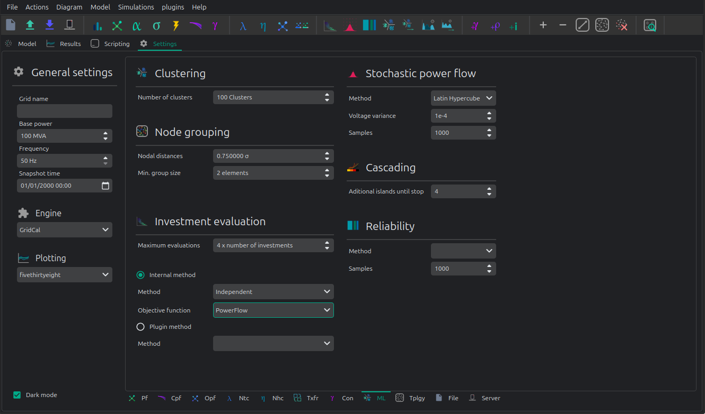
Registered Result Properties
InvestmentsEvaluationResults registered properties
The investments evaluation result stores the evaluated decision vectors and objective values used to inspect the search.
Property |
Type |
Description |
|---|---|---|
|
|
Maximum number of investment evaluations configured for the run. |
|
|
Objective function names. |
|
|
Decision variable names. |
|
|
Decision-variable index used on the x-axis of the result plot. |
|
|
Objective index used on the y-axis of the result plot. |
|
|
Evaluated decision-variable matrix. |
|
|
Objective-value matrix for the evaluated decision vectors. |
|
|
Best objective values found by the evaluation process. |
|
|
Indices that sort the evaluated solutions for reporting. |
Example
Loading the file TYNDP 2030.veragrid that represents the ENTSO-e planning exercise made in 2024 and replicated by the open-tyndp project, which has been roughly converted to VeraGrid. Running the NSGA3 and later the CBA methods using the time series optimal power flow objective, yields the following results:
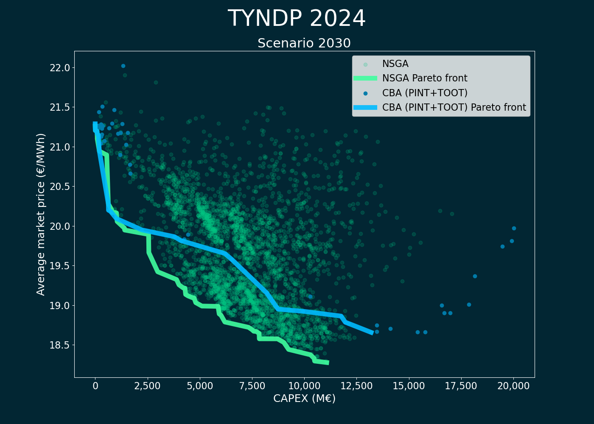
Each dot of the chart represents an objective function run, in this case the yearly optimal power flow. Note that this planning case only contains one sampling point per week. The green dots represent the NSGA3 run, while the blue points represent the CBA (TOOT+PINT) method.
TOOT+PINT, yields surprisingly good results for this planning case when compared with the more mathematically correct NSGA3. However, despite we can asure that NSGA3 always moves towards the optimal pareto front, the TOOT+PINT methods cannot guarantee any of that. The Pareto fronts in the picture have been computed from the sampled populations. But Again, NSGA3 is designed to sample the pareto front, while TOOT+PINT does none of that.
The Candidate investments in this case are the following:
Investment |
Freq. |
|---|---|
AT00-ITN1 Real 1::2035 |
437.0 |
AT00-SI00 Real 1::2035 |
680.0 |
BA00-HR00 Real 1::2035 |
17.0 |
BE00-FR00 Real 1::2030 |
4.0 |
BE00-GB00 Real 1::2035 |
647.0 |
BE00-NL00 Real 1::2035 |
161.0 |
BE00-NL00 Real 2::2035 |
1072.0 |
BG00-RS00 Real 1::2035 |
165.0 |
CH00-DE00 Real 1::2035 |
7.0 |
CH00-DE00 Real 2::2035 |
5.0 |
CH00-ITN1 Real 1::2035 |
0.0 |
CZ00-SK00 Real 1::2035 |
395.0 |
DE00-GB00 Real 1::2030 |
431.0 |
DE00-NL00 Real 1::2035 |
712.0 |
DE00-SE04 Real 1::2035 |
0.0 |
DKW1-GB00 Real 1::2035 |
708.0 |
DKW1-SE03 Real 1::2035 |
595.0 |
EE00-FI00 Real 1::2035 |
683.0 |
EE00-LV00 Real 1::2035 |
0.0 |
ES00-FR00 Real 1::2030 |
1049.0 |
ES00-FR00 Real 2::2030 |
898.0 |
FI00-SE01 Real 2::2030 |
50.0 |
FI00-SE01 Real 1::2035 |
526.0 |
FR00-GB00 Real 1::2035 |
156.0 |
GB00-GBNI Real 1::2030 |
0.0 |
IE00-GBNI Real 1::2030 |
0.0 |
GR00-ITS1 Real 1::2035 |
0.0 |
GR00-MK00 Real 1::2035 |
1057.0 |
HU00-RO00 Real 1::2035 |
15.0 |
HU00-RS00 Real 1::2030 |
246.0 |
ITCS-ME00 Real 1::2035 |
1.0 |
LT00-SE04 Real 1::2030 |
700.0 |
SE02-SE03 Real 1::2035 |
1041.0 |
LV00-SE03 Real 1::2035 |
0.0 |
These are the frequency when the investments appear in the Pareto front. This indicates how frequently are investments chosen in Pareto-optimal combinations. A very frequent appearance indicates that the investment is a low regret investment whereas a comparatively lower frequency investment is a higher regret investment option.
This way of choosing investment candidates offers decision maker a far superior way of determining where to spend the resources than the classical MIP-optimal result where the optimality is an opaque output where decision makers and modelers alike have a hard time understanding.
API
import VeraGridEngine as gce
# some grid with investments declared
gce.open_file("my_grid.veragrid")
# run a investment evaluation
problem = gce.AdequacyInvestmentProblem(
grid=grid,
n_monte_carlo_sim=n_monte_carlo_sim,
use_monte_carlo=use_monte_carlo,
save_file=False
)
options = gce.InvestmentsEvaluationOptions(max_eval=max_eval)
drv = gce.InvestmentsEvaluationDriver(
grid=grid,
options=options,
problem=problem
)
drv.run()
# Save excel
df_pareto_points = drv.results.mdl(result_type=gce.ResultTypes.InvestmentsParetoReportResults).to_df()
df_all = drv.results.mdl(result_type=gce.ResultTypes.InvestmentsReportResults).to_df()
Search Alternatives
The investments framework supports several ways of exploring the candidate space. In practice, the two main optimization-oriented alternatives are the NSGA family and MVRSM.
NSGA-based search
The NSGA-based route is the most direct multi-objective alternative. In the current implementation the
main helper is NSGA_3, which is called with the problem objective callback and the problem bounds:
X, obj_values = NSGA_3(
obj_func=self.objective_function,
n_partitions=n_partitions,
n_var=dim,
lb=self.problem.x_min,
ub=self.problem.x_max,
n_obj=len(ret),
max_evals=self.options.max_eval,
pop_size=pop_size,
crossover_prob=0.8,
mutation_probability=0.1,
eta=30,
)
This family of methods is useful when:
the user wants a Pareto front directly,
several objectives must be kept visible instead of being collapsed into a single score,
the decision space is discrete but still broad enough that cumulative one-by-one rankings are too restrictive.
Conceptually, the NSGA workflow evolves a population of candidate combinations. At each generation, the population is ranked according to Pareto dominance and diversity criteria, so the search tends to preserve solutions that represent different trade-offs among the objectives.
For the investments module this means:
the problem objective function is treated as a black box,
each candidate combination is evaluated exactly through the active problem,
the final displayed metrics are simply the objective vectors returned by that problem.
MVRSM
MVRSM is the surrogate-based alternative already integrated in the investments driver. Strictly speaking, it is not an evolutionary algorithm in the same sense as NSGA, because it does not evolve a population by selection and crossover. Instead, it builds and updates a surrogate model of the expensive black-box objective function and uses that model to guide the search.
This route is useful when:
each objective evaluation is expensive,
the number of possible combinations is too large for exhaustive inspection,
a user wants a faster guided search without evaluating a very large population explicitly.
In the investments workflow the role of MVRSM is:
evaluate some initial combinations,
fit a surrogate that approximates the objective response,
use that surrogate to propose promising new combinations,
keep updating the surrogate with real evaluations from the active problem.
The practical trade-off against NSGA is simple:
NSGA is usually easier to interpret as a Pareto-search mechanism.
MVRSM is usually more attractive when evaluation cost dominates and a model-guided search is preferred.
TOOT/PINT CBA Sequence
Besides population-based search methods such as NSGA-3, the investments framework also provides a deterministic independent ranking sequence inspired by the ENTSO-e CBA workflow. The implementation lives in:
src/VeraGridEngine/Simulations/InvestmentsEvaluation/Methods/toot_pint_cba.py
and is exposed as the library-style function:
TOOT_PINT_CBA(
obj_func=...,
n_var=...,
lb=...,
ub=...,
n_obj=...,
objective_names=...,
variable_names=...,
report_text=...,
logger=...,
)
The call is intentionally similar to the NSGA-3 helper: the method receives an objective callback plus the problem dimensions and bounds, and it returns the best-ranked combination according to the CBA sequence. This keeps the method reusable and avoids coupling it to the driver class.
Reference, PINT and TOOT
The sequence is built from three types of evaluations:
Reference case: the baseline combination, taken from the lower bound vector of the problem.
PINT case: a candidate project is added to the reference case and evaluated.
TOOT case: a target combination containing all projects is built from the upper bound vector, and then one project is removed and evaluated.
For each candidate project, the method computes:
the marginal improvement of the PINT case with respect to the reference case,
the marginal degradation of the TOOT case with respect to the target case,
a normalized scalar ranking score based on the project benefits and its CAPEX contribution.
That scalar score is used only to rank the projects. It is not used as a displayed objective.
Why the displayed objectives remain correct
The independent CBA sequence still relies on the active problem callback for every stored evaluation:
the reference case is evaluated through the problem objective function,
every PINT case is evaluated through the problem objective function,
every cumulative ranked portfolio is evaluated through the problem objective function.
As a consequence:
the objective names shown in the GUI come from
problem.get_objectives_names(),the objective values shown in the tables and Pareto plots are the exact values returned by the problem,
the CBA score is only an internal ranking quantity written to the logger.
This is particularly important for custom problems, such as the time-series linear OPF investment problem, where the visible objectives may be, for example, average nodal price, CAPEX, OPEX, load shedding, generation shedding and fuel usage.
Sequence output
Once the projects are ranked, the method evaluates a cumulative build-out sequence:
the reference combination,
one PINT evaluation for each candidate,
the cumulative combinations obtained by adding projects in ranked order.
The best combination reported back to the driver is the first-ranked project added to the reference combination. The results object itself still stores the full objective vectors of the evaluations performed by the active problem.
Available Problems
The search method is only one half of the setup. The other half is the problem definition, which determines:
what the decision vector means,
what simulation is executed for each candidate combination,
what objective vector is returned and shown in the results.
The engine currently exposes the following investment problem types.
PowerFlowInvestmentProblem
This is the snapshot power-flow problem.
Decision variables are binary.
Each investment group is either inactive or active.
The evaluation runs a standard power flow.
The objectives are technical and economic scores derived from losses, overloads, voltage penalties and CAPEX/OPEX-style terms.
This problem is appropriate for:
single-state studies,
quick technical screening of candidate reinforcements,
situations where time-series behavior is not required.
TimeSeriesPowerFlowInvestmentProblem
This is the time-series version of the power-flow problem.
Decision variables are binary.
Each investment group is either inactive or active for the full study horizon.
The evaluation runs a time-series power flow.
The objective vector contains the time-series technical and economic performance indicators defined by the problem.
This problem is appropriate for:
operational studies over multiple hours,
cases where the benefit of an investment depends on chronology,
power-flow-driven Pareto exploration.
AdequacyInvestmentProblem
This is the adequacy-oriented problem.
Decision variables are integer year-of-entry values.
0means “not invested”.1..Nmeans “project enters service in yearNof the selected horizon”.The evaluation runs either Monte Carlo adequacy or the simple dispatch path, depending on configuration.
The objective vector depends on configuration, but it is built around adequacy quantities such as:
LOLE,
CAPEX,
unitary electricity cost,
curtailment,
optional firm-capacity penalty.
This problem is appropriate for:
generation adequacy studies,
expansion timing questions,
year-of-entry optimization rather than only binary inclusion.
TimeSeriesLinearOptimalPowerFlowInvestmentProblem
This is the time-series linear OPF investment problem introduced for nodal-price and dispatch economics studies.
Decision variables are integer year-of-entry values, following the adequacy-style encoding.
External
OptimalPowerFlowOptionsare provided by the caller, but the problem forces the linear OPF formulation.Candidate assets are forced off in the baseline state and then activated from the chosen entry year onward.
Each evaluation runs a time-series linear OPF.
The objective vector currently contains:
average nodal price,
CAPEX,
OPEX,
load shedding,
generation shedding,
fuel usage.
This problem is appropriate for:
market- or dispatch-oriented transmission and generation candidate studies,
nodal-price-sensitive investment screening,
time-dependent investment timing studies with operational dispatch metrics.
Relationship between problem and displayed metrics
The displayed metrics in the investments results always come from the active problem. This is true for:
NSGA-based runs,
MVRSM runs,
random exploration,
TOOT/PINT CBA ranking sequences.
Therefore, choosing a different problem changes both:
the electrical simulation used during each evaluation,
the meaning and names of the objectives shown in the reports and Pareto views.
Theory
This section develops all the research that has been done in VeraGrid to develop the current stage of investments planning.
Theory Pt.1
Formulation
Basic objective function
The selected objective function considers both technical and economical criteria. In particular, it is defined as:
where is a penalty function associated with active power losses, accounts for branch
overloadings, gathers the undervoltage and overvoltage module penalties, and represents the
voltage angle deviation penalties. Power losses and overloadings are calculated for every branch
of the grid , the voltage-related costs are computed at every bus  and the CAPEX and OPEX are related
to each active investment . Note here that the unknown
and the CAPEX and OPEX are related
to each active investment . Note here that the unknown  is used to represent the investment
combination under consideration. That is, has to be seen as a vector that contains an -length
set of boolean variables that account for the activated or deactivated investments:
is used to represent the investment
combination under consideration. That is, has to be seen as a vector that contains an -length
set of boolean variables that account for the activated or deactivated investments:
or in compact form, equivalently, .
Costs calculation
Active power losses are calculated directly from the simulation results, such as power flow results. All branches, including lines, transformers, DC lines, etc., are considered. The losses are summed to get .
For branch overloadings, the procedure is similar. The loading of each branch is computed from simulation results, and branches with loads above 100% of the rating are penalized. The penalty is calculated by multiplying the associated overload cost and the loading:
where is the set of indices where and is the corresponding overload penalization of the branch.
Regarding the undervoltages and overvoltages, the associated penalty is computed as:
where are vectors containing voltage module results, allowed maximum voltage, minimum voltage limit and voltage module penalization for each bus.
Machine-learning algorithm Once the objective function is defined, each evaluation is sent to the machine-learning model previously mentioned. The algorithm being tested is the so-called Mixed-Variable ReLU-based Surrogate Modelling (MVRSM). For further information, the reader can find the reference paper to understand the insights of the model.
As for the electrical problem, it is not initially relevant what goes on inside the machine-learning algorithm, it works as a black-box model. The objective function is evaluated and sent to the model in each iteration and in the end, the model outputs the optimal point.
Testing on a Grid
Grid
In order to test the algorithm for different variations of the objective function, a 130-bus grid has been prepared with 389 Investment Candidates including lines and buses. The diagram of the grid is shown in Figure 1.
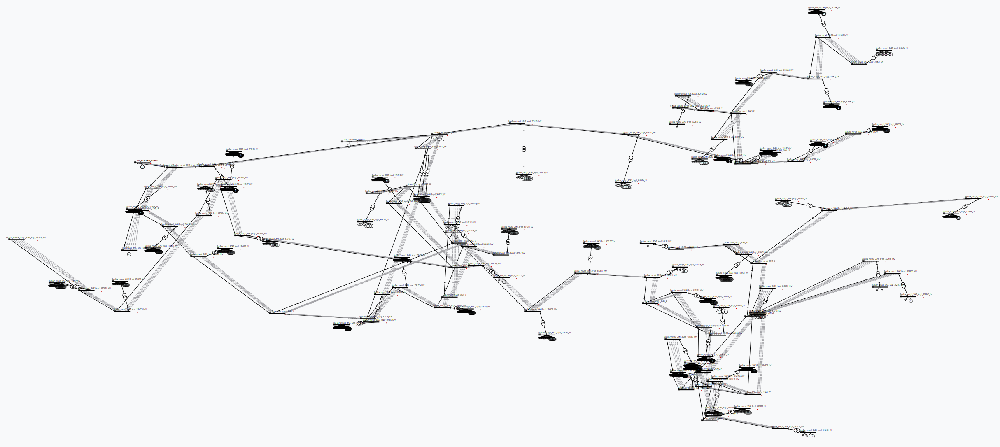
Figure 1: Test grid diagram. Grey lines and repeated elements are investment candidates.Base case
Initially, the algorithm did not include the economical criteria in the objective function. Although it is clear that it is needed to somehow include the CAPEX and OPEX in the minimization, the results shown in Figure 2 are useful to later grasp the effect of modifying the minimization function.
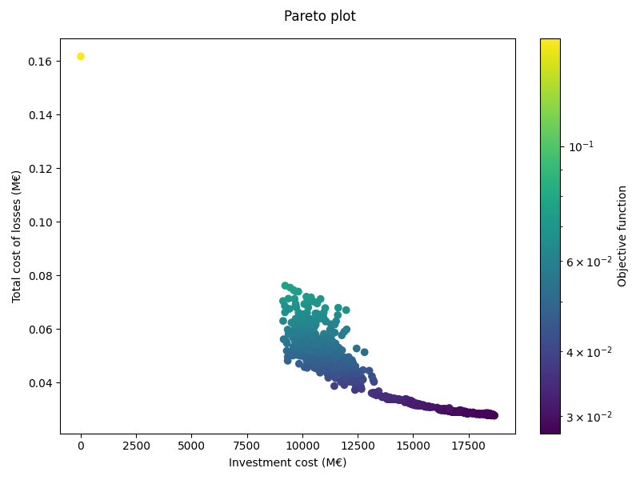
Figure 2: Paretto plot for investments evaluation without CAPEX inside the objective function.It is clear in Figure 2 that the more investments are selected, the lower the technical criteria are and, therefore, the lower the objective function. Hence, the algorithm learns that more investments equals minimum objective function values. By adding the CAPEX to the objective function, it is expected to correct this tendency and instead find an optimal point regarding both technical and economic criteria.
Initial tests
Including the CAPEX in the objective function is a delicate problem. As seen in Figure 2, the CAPEX values can be above while the technical criteria are below . Therefore, when adding these values to the objective function, the CAPEX will inherently have more weight and unbalance the results. As an example, the reader can find below the graphs corresponding to multiplying the CAPEX by different minimization factors
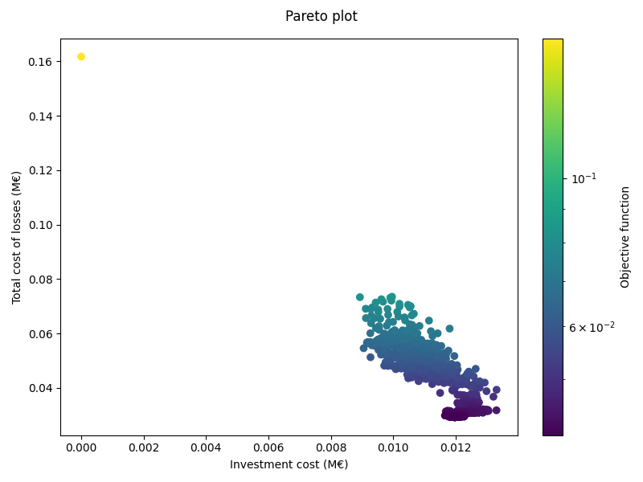
Figure 3: Results obtained when CAPEX is multiplied by .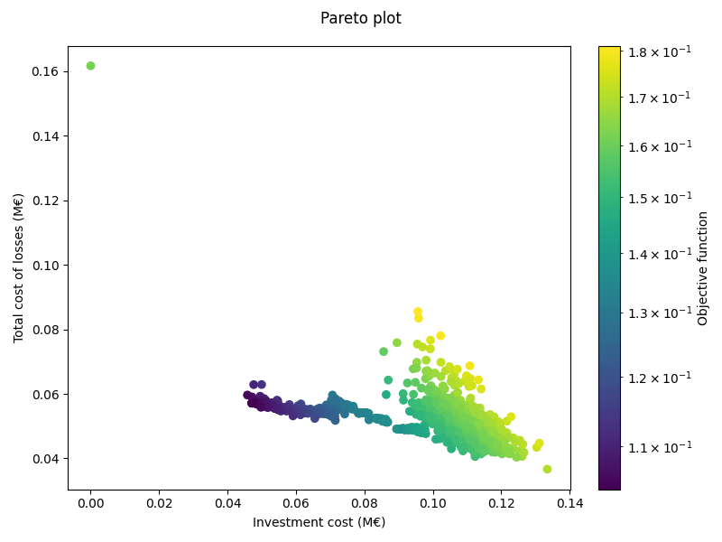
Figure 4: Results obtained when CAPEX is multiplied by .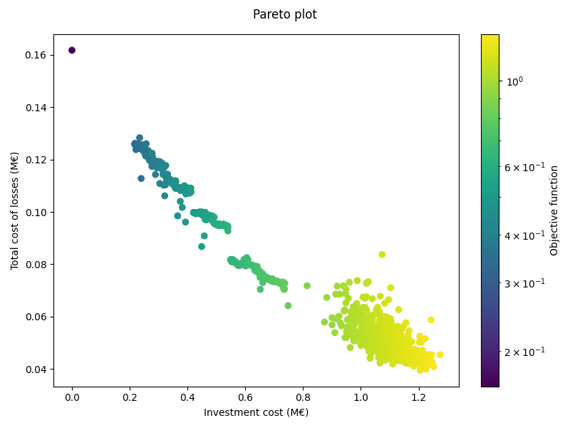
Figure 5: Results obtained when CAPEX is multiplied by .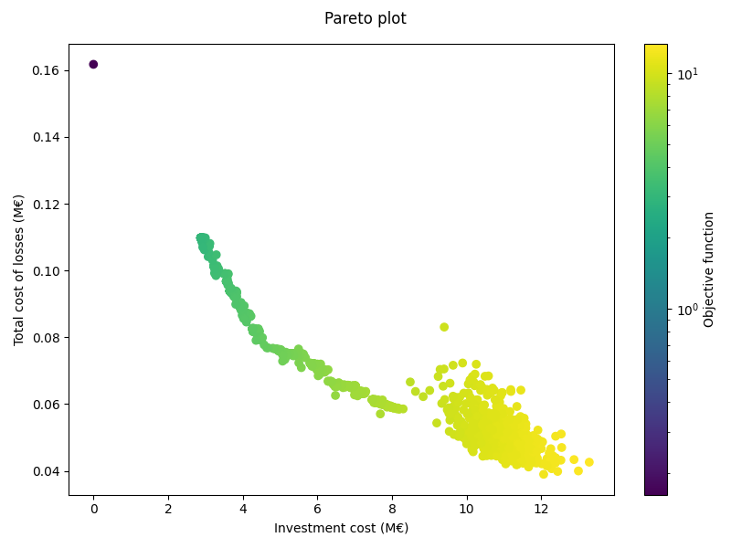
Figure 6: Results obtained when CAPEX is multiplied by .The previous figures show that the more disparate the economic and technical criterion are, the more likely is the objective function to tend to lesser investments solutions. The situation from the Base case is reverted, but another problem arises: How should the different criteria values be computed so that all elements in the objective function are around the same order of magnitude?
Normalization
When dealing with multi-criteria optimization, it is common to establish some reference values for each criterion in the objective function and normalize the terms by dividing the factors by the reference point. In essence, the basic objective function presented in Formulation would be modified as:
However, given the nature of the problem being solved, it is not possible to determine reference values for each criteria beforehand. Hence, some solutions are proposed. The reader can find the explanation and results obtained in the following subsections.
4.1. First iteration normalization
The first solution studied consists of taking the values of the terms for the first iteration with investments, compute scaling factors referent to that iteration as
being:
: the scale factor for each criteria; losses scaling factor, overload scaling factor, etc.,
: the mean between the maximum and minimum value of each criteria; ,
: an array of all the computed means of the factors; .
and multiply each term for its scaling factor throughout the rest of the iterations. Therefore, the objective function ends up being:
The results obtained in this normalization resemble the ones shown in Figure 5, given that the CAPEX scaling factor is essentially $$.
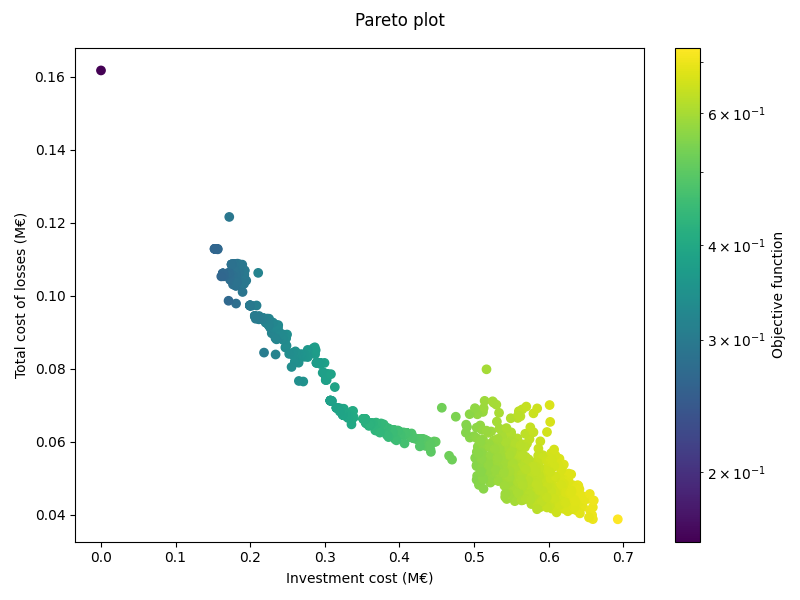
Figure 7: Results obtained for the first normalization type.4.2. Scale after random evaluations
For the second solution, the MVRSM is altered so that the normalization of the different criteria is done internally.
The new algorithm consists first of some random evaluations, in the studied case, 1.5 times the number of possible investments.
During the random evaluations, the model is not updated nor the are updated by minimizing the model.
Afterwards, the maximum and minimum values throughout the evaluations are saved in
order to apply the normalization as:
where  is a vector containing the values of the criteria before normalization and represents
the values after normalization. Hence, this normalization is applied to all the values found in the random process and
the model is now updated with the normalized values.
is a vector containing the values of the criteria before normalization and represents
the values after normalization. Hence, this normalization is applied to all the values found in the random process and
the model is now updated with the normalized values.
The second and final part of the algorithm consists of the rest of the evaluations, where each time the criteria are found, they are normalized and the model is updated and minimized.
Therefore, the algorithm ends up being:
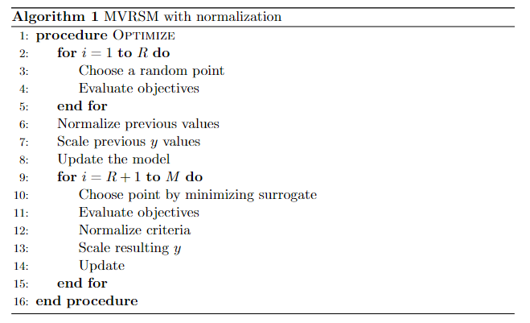
Figure 8: Updated algorithm “grosso modo”.This new configuration has been tested using two different functions:
Using Rosenbrock’s function where and . this way, are the criteria that need to be normalized before entering the objective function
Using a Sum function where
is computed by multiplying a
binary vector and a costs vector and where is the number
of 1 in the binary vector previously mentioned.
The results obtained show that the algorithm works and tends to the actual minimum point of the functions.
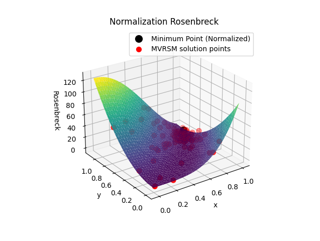
Figure 9: Results obtained for the Rosenbrock function.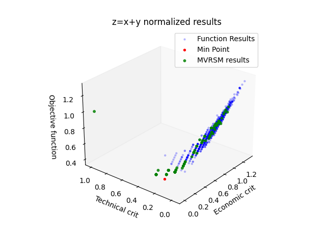
Figure 10: Results obtained for the Sum function.Finally, the algorithm is tested in the presented grid.
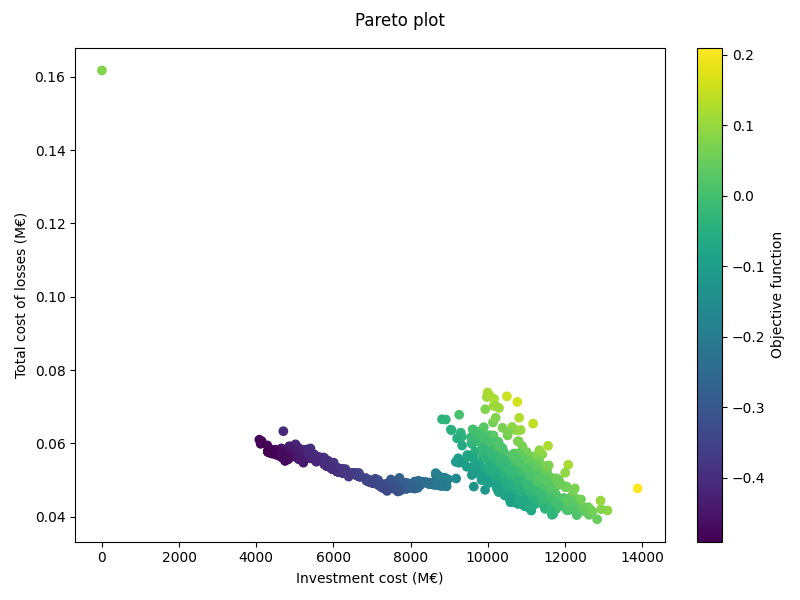
Figure 11: Results obtained for the updated algorithm.The results show a similar points distribution as Figure 4. This is not a coincidence, given that by applying the normalization, both the technical and economic criteria end up being in a similar order of magnitude, which is the same case as the one shown in Figure 4.
It is worth mentioning that because the objective function can now take negative values, the normalization used in the colors visualization can no longer be LogNorm() and has been changed to Normalize().
Random evaluations process
Given that all previous figures share a similar shape in terms of point distribution, with two separated regions, it is questioned that the algorithm is exploring all the possible solutions, especially during the random evaluation iterations. One would expect a continuous Pareto front, whereas the obtained results show no solutions at the intermediate points.
Therefore, it is determined that when creating random vectors the probability of getting a 0 or a 1 must
change for each random iteration. Then, the random vectors obtained represent combinations of varying number
of investments. For the previous testing, the probability was fixed to 0.5 which meant that the vectors had more or
less the same number of investments each random iteration.
The results obtained with the scaled algorithm show a clear Pareto front as seen in Figure 12.
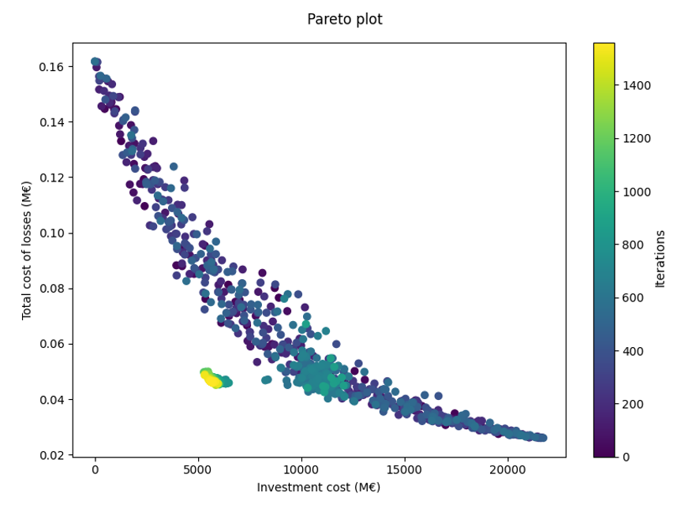
Figure 12: Results obtained for the updated random evaluation iterations.However, the results show that the obtained Pareto front is only due to the random iterations. The points that represent the minimization process, which begins after roughly 600 iterations are clearly centered around two areas which are not that far from the areas obtained in previous figures. Therefore, given that the algorithm is not actively exploring the Pareto front, it is thought that there may be a whole set of points more optimal than the ones obtained during the random iterations, as shown in red in Figure 13.
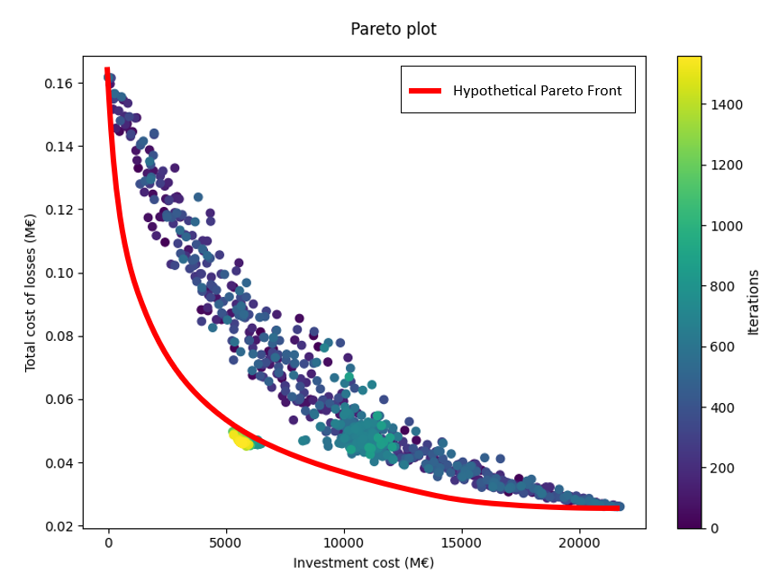
Figure 13: Hypothetical unexplored Pareto front.Multi-objective optimization
Another line of research includes modifying the MVRSM model to support multi-objective minimization. This way, the scaling process after the random evaluations is not necessary, instead, the model works directly with the values obtained for each cost computation (losses cost, overload cost, CAPEX,…). Hence, the problem becomes a 6-objective minimization problem.
On the one hand, the MVRSM is adapted so that the surrogate model can predict an outcome for every objective. What was previously done for one objective has to be repeated now six times, hence, the computation time is significantly higher than for the previous case.
On the other hand, to minimize the model, random weights are chosen for each objective ( the sum of the weights must be 1), then a single value is computed as the sum of each objective multiplied by its weight. In every iteration, these random weights must change. This way, it is still possible to use Scipy’s tool “minimize”, since the model still returns one single value. The reader can find a more in-depth explanation of the reasoning behind this process in this reference paper.
The results obtained show a similar distribution as in Figure 14, however, the algorithm does not find the points outside the curve and closer to the optimal point (0,0).
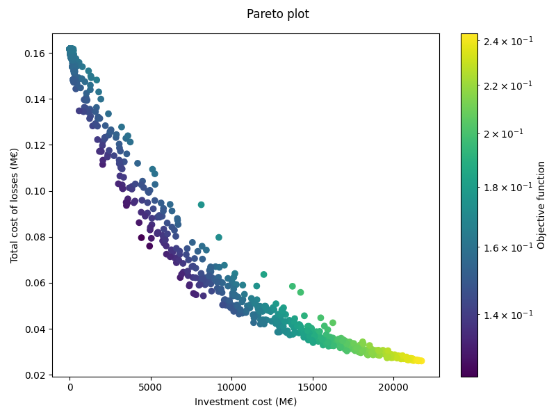
Figure 14: Results obtained for the multi objective optimization.Testing on ZDT3
This section covers the testing of both the multi-objective and single-objective with normalization algorithms on a typical test function for multi-objective optimization.
Test function for optimization
The function to be tested is the Zitzler–Deb–Thiele’s function N3 (ZDT3):
This test function shares one particularity with the grid problem at hand: the objective is highly dependent on the number of variables that take non-zero values, given the presence of a summation . In the electrical case, this relates to the CAPEX objective, which also depends on the number of investments evaluated, the more investments are active, the higher the total investment will tend to be. The Pareto front expected can be seen in Figure 15.
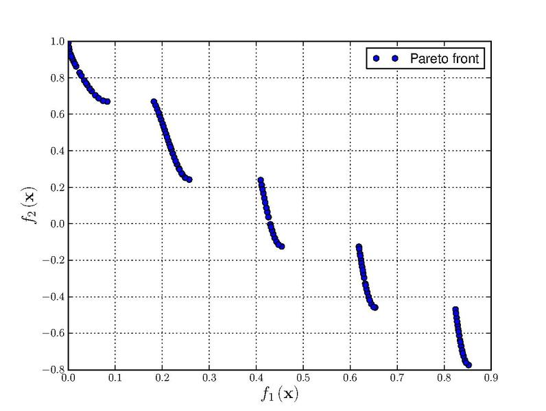
Figure 15: Expected Pareto front for ZDT3.On the one hand, the multi-objective algorithm is tested. The results for different simulations are shown in Figures 16-18.
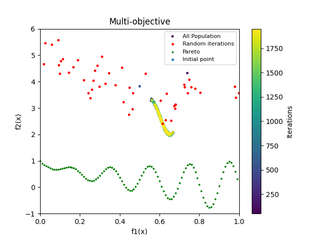
Figure 16: Results obtained for ZDT3 with multi-objective adapted algorithm, simulation 1.Figure 17: Results obtained for ZDT3 with multi-objective adapted algorithm, simulation 2.
Figure 18: Results obtained for ZDT3 with multi-objective adapted algorithm, simulation 3.
As demonstrated in the previous figures, the multi-objective algorithm fails to approximate the Pareto front of ZDT3. Instead, its exploration during the minimization process shows an unwanted concentration around the best point identified in the random iteration phase. This not only results in a deviation from the desired functionality but also underscores a lack of robustness, as the final outcome is excessively influenced by the random iterations process. The algorithm, therefore, not only falls short of meeting the desired objectives but also reveals susceptibility in its performance.
On the other hand, the following figures show the results for the single-objective algorithm with normalization, Figures 19-21.
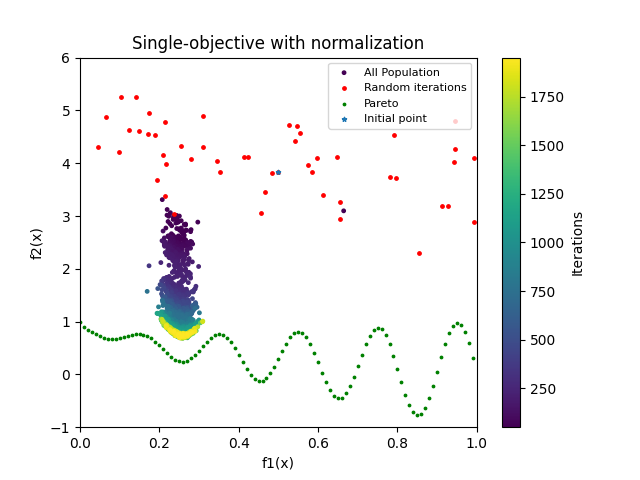
Figure 19: Results obtained for ZDT3 with single-objective adapted algorithm, simulation 1.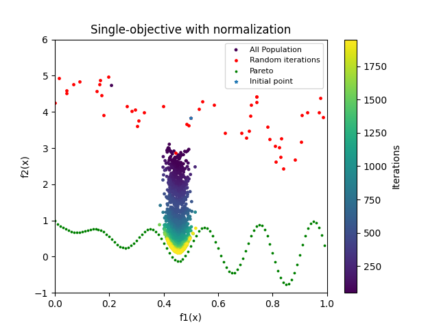
Figure 20: Results obtained for ZDT3 with single-objective adapted algorithm, simulation 2.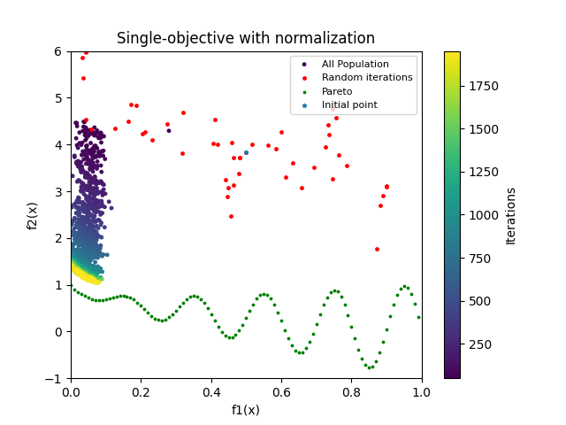
Figure 21: Results obtained for ZDT3 with single-objective adapted algorithm, simulation 3.As shown in the preceding figures, the single-objective algorithm approaches the Pareto front during the minimization process, albeit requires a substantial number of iterations to get sufficiently close. Moreover, similar to the multi-objective algorithm, its performance is extremely linked to the best point found during the random iterations process, then, the final result is different depending on the simulation.
Furthermore, the observed behavior in the case of ZDT3 draws parallels to the earlier tests performed on the grid. The algorithm does get close to the Pareto front but does not extensively explore it during the minimization process, which would be the desired situation.
Conclusions
Based on the results obtained throughout the different tests, some conclusions can be drawn. - The single-objective algorithm’s performance is significantly influenced by the order of magnitude of the criteria. - While the single-objective algorithm successfully minimizes the function, it falls short of exploring the entire Pareto front, which would be the desired outcome. - The current adaptation of the surrogate model to support multi-objective minimization does not minimize the function correctly, at the moment. - Neither algorithm performs the desired minimization.
In light of these observations, future work should include the exploration of established multi-objective black-box optimization methods and alternative algorithms for multi-objective minimization, such as the application of NSGA-III.
Theory Pt.2
Improving the NSGA-3 investments
In continuation to prior advancements in solving the power grid optimisation problem, this report presents the NSGA-III machine learning algorithm, which has been researched, developed and implemented into VeraGrid with the aim of improving investment evaluation performance.
This multi-objective optimisation problem is currently defined by two objective functions, (Equations 1 & 2). They aim to minimise the total investment cost, C = CAPEX + OPEX, while simultaneously minimising the technical cost, which is the sum of monetary penalties applied to technical violations within the grid and power losses.
Please see the investment evaluation documentation on VeraGrid’s GitHub for their detailed definitions [1].
Previously, the Mixed-Variable ReLU-based Surrogate Modelling (MVRSM) algorithm was developed to solve this non-linear optimisation problem. For multi-objective, it was not minimised correctly. For a single-objective function, though optimal solutions were found and shown via a Pareto front, it was only obtained due to random iterations, concluding that MVRSM did not actively explore the Pareto front. As seen in Figure 1, its optimal solutions also tended to a concentrated area. A set of more optimal points passing through this area was hypothesised to be discovered by a genetic algorithm.
Figure 1: MVRSM results with hypothetical improved Pareto front
NSGA-III Theory
The Non-Dominated Sorting Genetic Algorithm III is an evolutionary (genetic) algorithm designed to find the Pareto curve of optimal solutions for multi-objective or many-objective functions. It was implemented for this optimisation problem using Pymoo’s problem and algorithm library [2].
NSGA-III [3] starts by performing non-dominated sorting for its survival stage. It then assigns solutions to reference directions in the objective space. From the splitting front, solutions are selected, filling up the least represented reference directions first. If a reference direction does not have any solution assigned to it, NSGA-III selects the solution with the smallest perpendicular distance in the normalised objective space to survive. If a second solution is added to a reference direction, it is assigned randomly to maintain diversity.
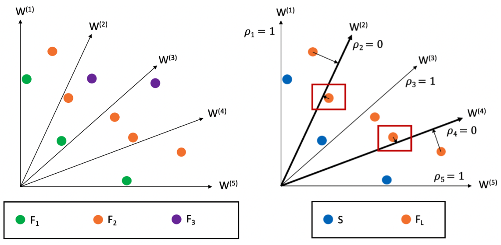
Figure 2: (a) Non-dominated sorting (b) Points assigned to reference linesAs NSGA-III converges, each reference direction seeks to find a representative non- dominated solution, eventually achieving a balanced distribution of solutions across the Pareto front.
Hypertuning
The carefully tuned parameters that direct the algorithm are explained below, with comparisons shown where necessary, to validate the settings chosen. The algorithm was simulated several times on the investment grid in Figure 6, to test which parameters most effectively solved the minimisation problem.
Population Size
The population size refers to the number of individuals in each generation of the algorithm. In this case, it represents the pool of investment configurations sampled by NSGA-III. When trying different scale factors, it was discovered that using a population size equal to a fraction, such as one-fifth, of the total number of investments produced the best Pareto curve. This may be because if the population size is too high, it is more likely that suboptimal solutions begin to dominate the population over time; genetic drift. This may cause the solutions to converge prematurely to suboptimal regions of the Pareto front. The population size should not be too low, however, as the algorithm may struggle to adequately explore the solution space.
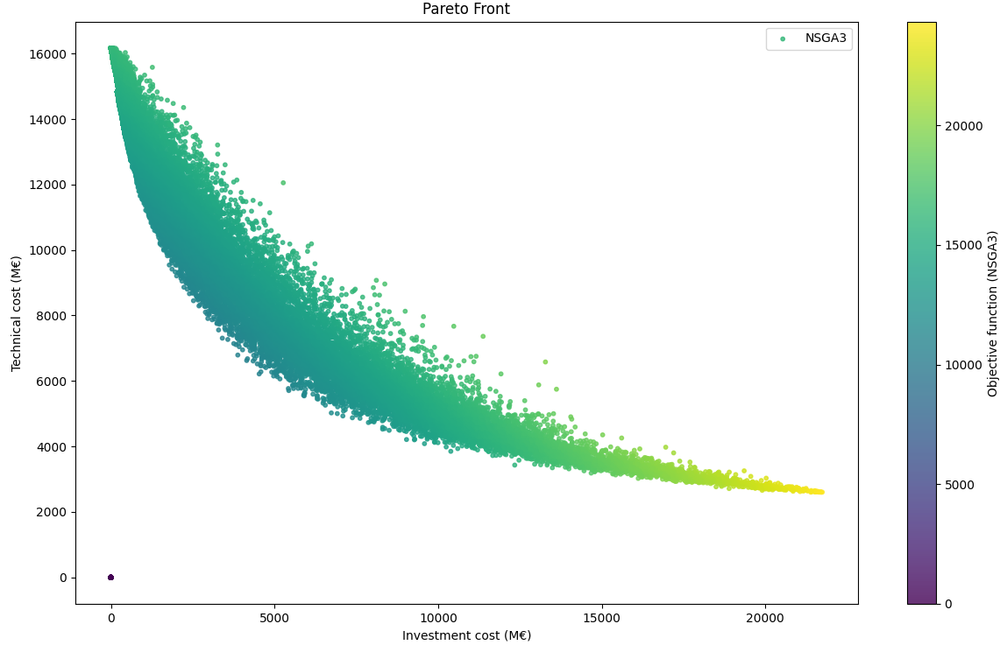
Figure 3: (a) Dimension scaled by 2 has shallow curvature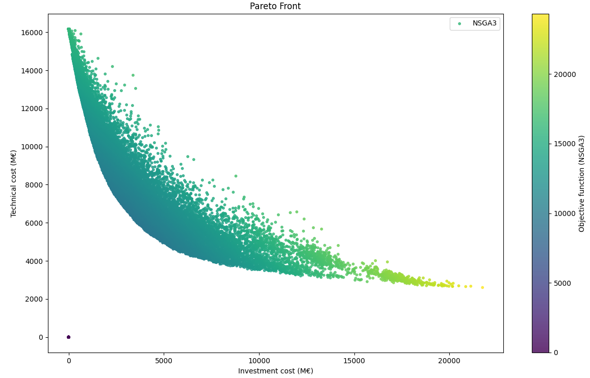
(b) Dimension scaled by 0.2 provides finds more optimal solutions due to its deeper curveReference Directions
The reference direction used during the optimisation defines its rows as the reference lines and its columns the variables. This partitions the points in the objective space and assigns each variable to a line. The reference direction is set equal to the population size for this problem, since we would like to obtain a solution for all inputs. A smaller value would partition the points with larger spacing, reducing the number of points identified and therefore possibly inadvertently discarding some optimal solutions, as shown in the sparse vs full plots in Figure 4. The algorithm’s construction does not allow for reference lines to go above the population size, so the maximum number of partitions is the population’s dimension.
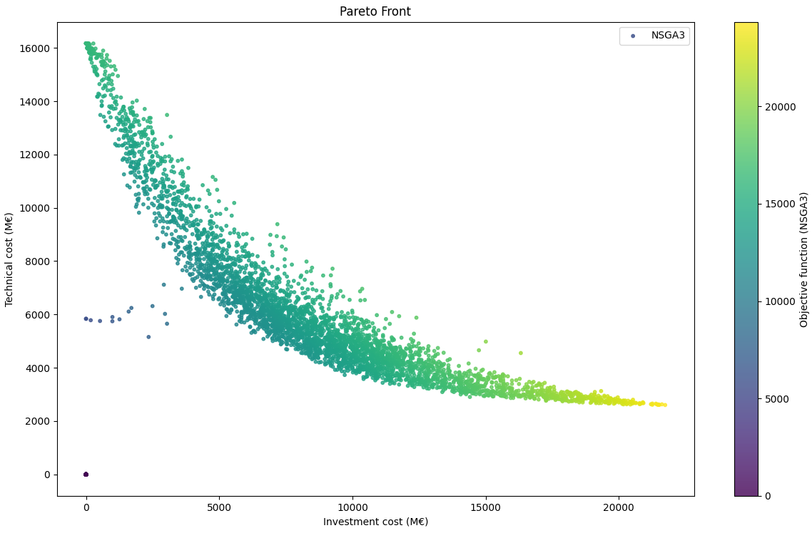
Figure 4: (a) No. partitions = population size / 10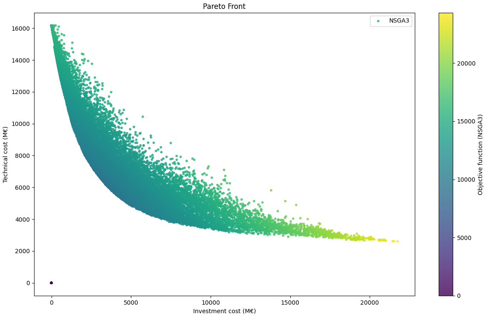
(b) No. partitions = population sizeThere are also different types of reference direction sources: The uniform and das- dennis methods generate an even distribution of points across the objective space, providing a balanced exploration of solutions. However, they are not effective for nonlinear problems. The energy generation distributes the reference directions more densely in regions of high energy. This prioritises sampling in areas with significant variations in objective values, improving the coverage of the Pareto front. This type works well for the problem at hand. The reduction type reduces overlap between reference directions, without sacrificing exploration, which effectively solves our multi-objective problem, whilst also removing any unnecessary computation
Sampling Technique
The sampling process defines the initial set of solutions; from which NSGA-III starts its optimisation. The choice of sampling technique is significant, as it influences the diversity and coverage of the initial population, a poor choice potentially resulting in restricted exploration of the solution space.
There are several types of sampling techniques available in Pymoo, including integer, float and binary random sampling and latin hypercube sampling. It is also possible to write a personalised sampling method. For this case, since the variables are binary, and a systematic sampling method is desired to explore the entire Pareto front, a binary uniform sampling method was created. Figure 5 presents the different types of sampling, the first three are unable to explore points past an investment cost of ≈12000 MC, whereas binary uniform explores the entire front past 20000 MC.
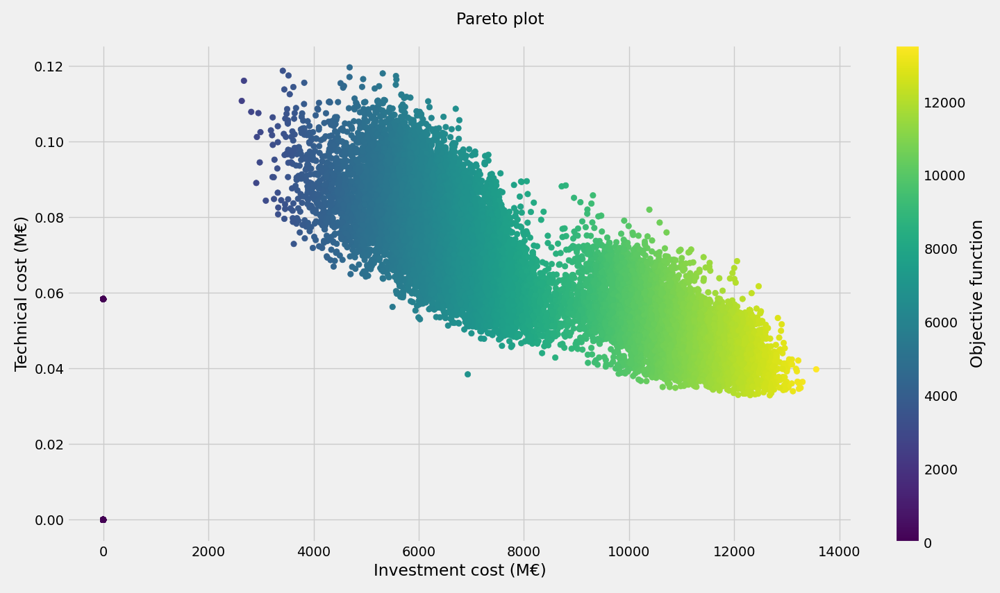
Figure 5: (a) latin hypercube sampling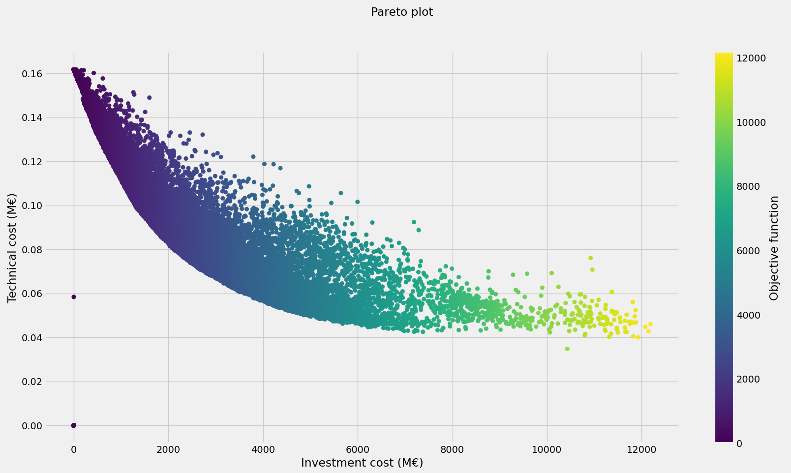
(b) integer random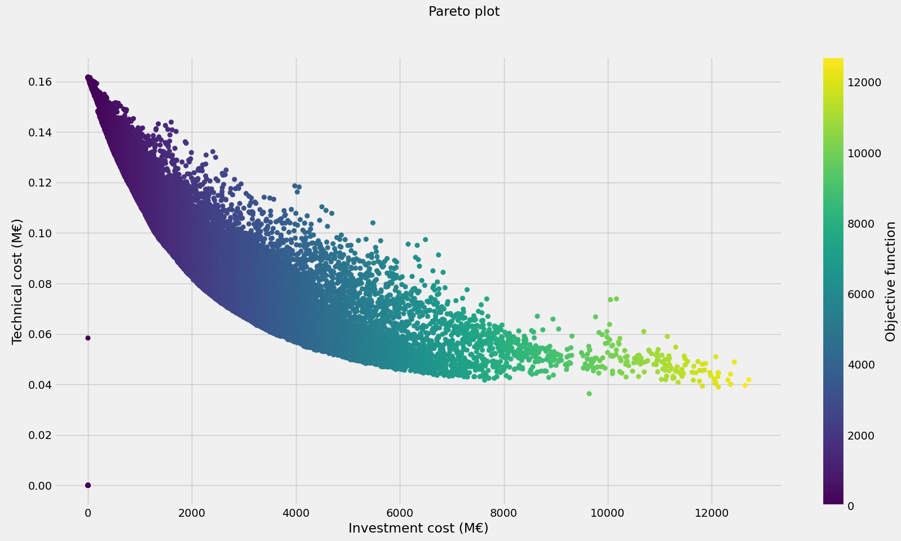
© binary random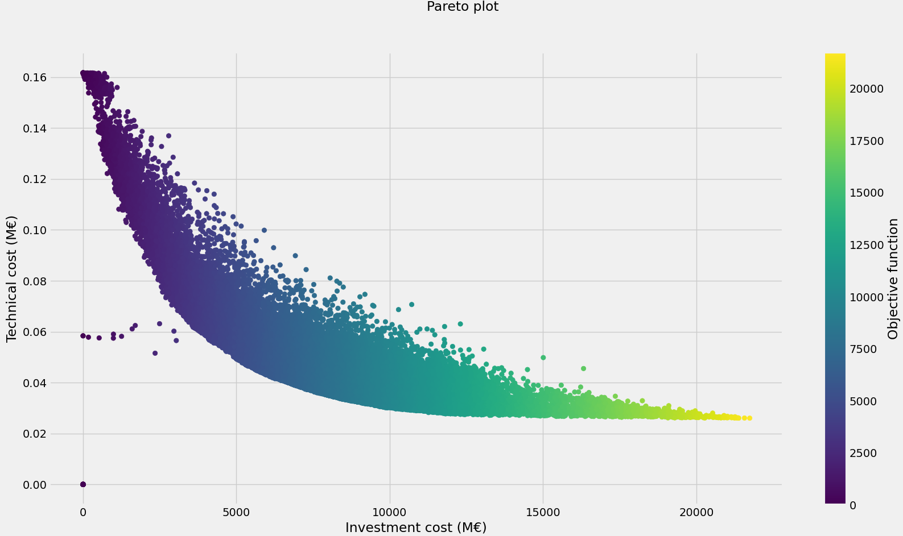
(d) binary uniformSelection
A genetic algorithm requires a mating selection so that parents are selected for each generation to produce new offspring using different recombinations and mutation operators. Different strategies for selecting parents are available, such as random, neighborhood, and tournament (to introduce some selection pressure). This is set to random since we would like to shuffle and thoroughly explore all possible combinations, in the hope of finding all optimal solutions.
Crossover
The crossover operator combines genetic information from parent individuals to create offspring during evolution. The best probability found was a high value, close to 1, which ensured that offspring were frequently generated through recombination of parent solutions, promoting genetic diversity. This encourages further exploration of the solution space.
Mutation
Performing mutation after crossover introduces random changes to individual solutions through each generation. A higher probability of mutation increases the diversity in the population, potentially leading to the discovery of more optimal solutions. However, very high mutation may result in the loss of good solutions if they are changed or lost during evolution. It was therefore set to 0.5 to ensure a balance between exploration and exploitation.
Crowding Distance
The eta value, which defines the crowding distance, influences the degree of curvature in the Pareto front. It was set to a high value between 10 and 30 which produced the most curvature due to a greater dispersion of solutions along the Pareto front.
Results
The two algorithms were tested on the 130-bus grid (Figure 6) prepared with 389 Investment Candidates including lines and buses in order to visually compare their performances.
Figure 6: 130-bus grid for evaluating investments
After testing for an equal amount of time, the plots in Figure 7 proves the NSGA- III outperforms MVRSM and fully explores the Pareto frontier, passing through the concentrated MVRSM area as predicted.
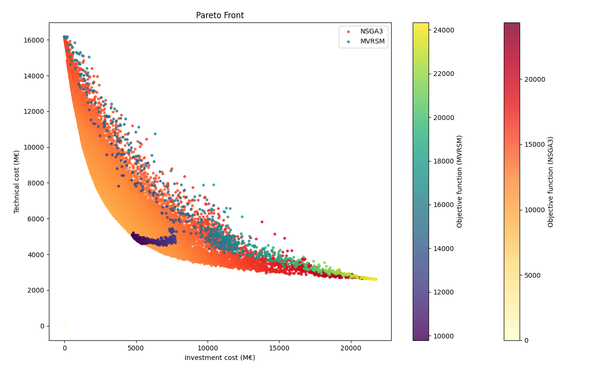
Figure 7: Pareto front comparison after 10 minutes of simulationIn addition to this, NSGA-III is approximately 25 times faster, computationally, which is a promising result for future evaluation on larger grids. Though it still takes a significant amount of time to generate a very smooth and complete curve, a plot more optimal than MVRSM’s can still be produced with few iterations.
Optimum Parameter Configuration:
Parameter name |
Setting |
|---|---|
Population size |
No. investment groups / 5 |
No. partitions |
Population size |
Sampling |
Binary uniform |
Crossover |
Probability 0.8 |
Mutation |
Probability 0.5 |
Eta |
30 |
Future Development
Improvement at this stage would involve creating a surrogate model in order to decrease the time taken to evaluate the investments. Though faster than MVRSM, NSGA-III still takes some time to run, which we would ideally like to reduce.
As seen by the scatter plot, many points that are distant to the optimal frontier are stored. By eliminating these, the memory and time taken could be lowered.
To ensure robustness of this algorithm, it should be tested on multiple grids, including simpler and smaller, and more complex and larger systems.
References
[2] https://pymoo.org/algorithms/moo/nsga3.html
[3] K. Deb and H. Jain, ”An Evolutionary Many-Objective Optimization Algorithm Using Reference-Point-Based Nondominated Sorting Approach, Part I: Solving Problems With Box Constraints,” in IEEE Transactions on Evolutionary Computation, vol. 18, no. 4, pp. 577-601, Aug. 2014, doi: 10.1109/TEVC.2013.2281535. https://ieeexplore.ieee.org/stamp/stamp.jsp?tp=&arnumber=6600851
[4] K. Deb, A. Pratap, S. Agarwal and T. Meyarivan, ”A fast and elitist multiobjective genetic algorithm: NSGA-II,” in IEEE Transactions on Evolutionary Computation, vol. 6, no. 2, pp. 182-197, April 2002, doi: 10.1109/4235.996017. https://ieeexplore.ieee.org/document/996017
This chapter was authored by Cristina Fray on 6th May 2024.